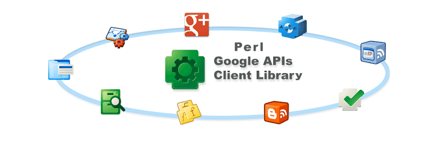

 This is my Private Version of WebService::GoogleAPI::Client and is in no way related to the cpan module in the same namespace To chat about WebService::GoogleAPI::Client join me on Gitter
Subscribe to my Google Calendar for events and release dates.
If you do take parts of this code for your own module please do me the common courtesy of attributing it
Don't be a MUPP/ET - Many Users Prefer Political Posturing over Evidenced Truth
Differeing opinions on everything welcome but please make an effort to respect and understand others and treat communication efficiency as a priority.
I suspect that this module has some fundamental architectural design issues that may make it non-maintainable. While using the Google API discovery services to dynamically construct subclasses for services might sound great in reality it may prove a dead end.
NB - this library is for managing OAUTH'd user access services server-side on behalf of the authenticated user. You 'can' use this for your own API use only, but this is for other people who are granting you permission to use their Google Services; such as accessing their emails or executing queries that have costs involved against their billing account etc. If you are wanting to only access your own account you should also consider Service Accounts and JWT's as per Mojo::JWT::Google and related/similar modules.
You can see who you have provided OAUTH'd access for your account at Google Security - Apps with Account Access
This module features parsing the Google API Discovery data - and doesn't do that comprehesively - A better/alternate approach may be to build a simple Swagger based client.
There are other issues with the WebService::GoogleAPI::Client implementation both in cpan and my version that need to be thrashed out before it is ready for real widespread usage.
That said there are some parts of this library that may be useful. There's a nice little
goauthCLI to generate your tokens with an embedded local webserver which makes it easier to explore the Google API. There is also enough around the discovery stuff to be of interest and there's a low level method that you can use to quickly get started with OAUTH'd access to the Google API Endpoints.
On the downside the code is pretty poor generally with the base code looking more like a learning excercise than the work of a subject matter expert. The cpan namespace owner is himself mostly interested in learning to use some of the supporting tools above introducing code improvements. The library makes excessive use of the discovery services and the autoclassing fails for anything other than the top level methods. There are parts of the code base that are skeleton and not implemented and the limitations of the code are not made clear.
If none of that scares you away - feel free to reach out and I will be happy to advise on how I use and am trying to improve it. My initial use case was to access the GMAIL services to send an email which I have struggled to do previously through the API. I have examples of how I did this in my source which may be of use. I can also point you to other modules that I have had success with for other services such as updating google sheets etc with examples if required.
Many thanks - hopefully this saves someone from the hours of frustration I've had trying to use my fave language to leverage Google API services.
Peter Scott